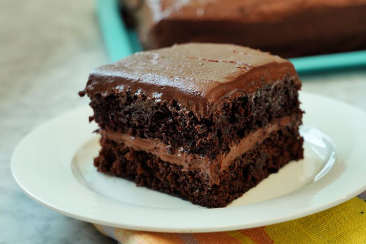

Chocolate Cake

Chocolate Cake by AllRecipes
Description
This chocolate cake recipe is a classic favorite, perfect for any occasion. It's moist, rich, and incredibly easy to make.
This recipe does not require any store-bought cake mix, as we will make this from scratch!
Ingredients
- 2 cups white sugar
- 1 ¾ cups all-purpose flour
- ¾ cup unsweetened cocoa powder
- 1 ½ teaspoons baking powder
- 1 ½ teaspoons baking soda
- 1 teaspoon salt
- 2 large eggs
- 1 cup whole milk
- ½ cup vegetable oil
- 2 teaspoons vanilla extract
- 1 cup boiling water
- Chocolate frosting of your own choice
Steps
- Gather all ingredients. Preheat the oven to 350 degrees F (175 degrees C). Grease and flour two 9-inch round baking pans.
- Stir sugar, flour, cocoa, baking powder, baking soda, and salt together in a large bowl.
- Add eggs, milk, oil and vanilla; mix for 2 minutes on medium speed with an electric mixer.
- Stir in the boiling water. The batter will be thin.
- Pour evenly into the prepared pans.
- Bake in the preheated oven until a toothpick inserted into the center comes out clean, about 30 to 35 minutes.
- Cool in the pans for 10 minutes, then transfer to a wire rack to cool completely.
- Once cooled, frost with your favorite chocolate frosting.
- Enjoy your homemade chocolate cake!